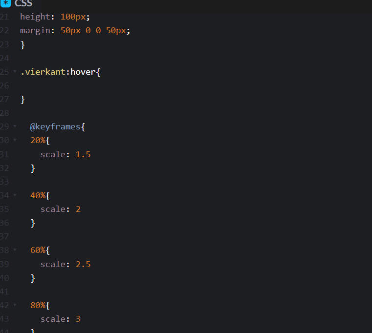
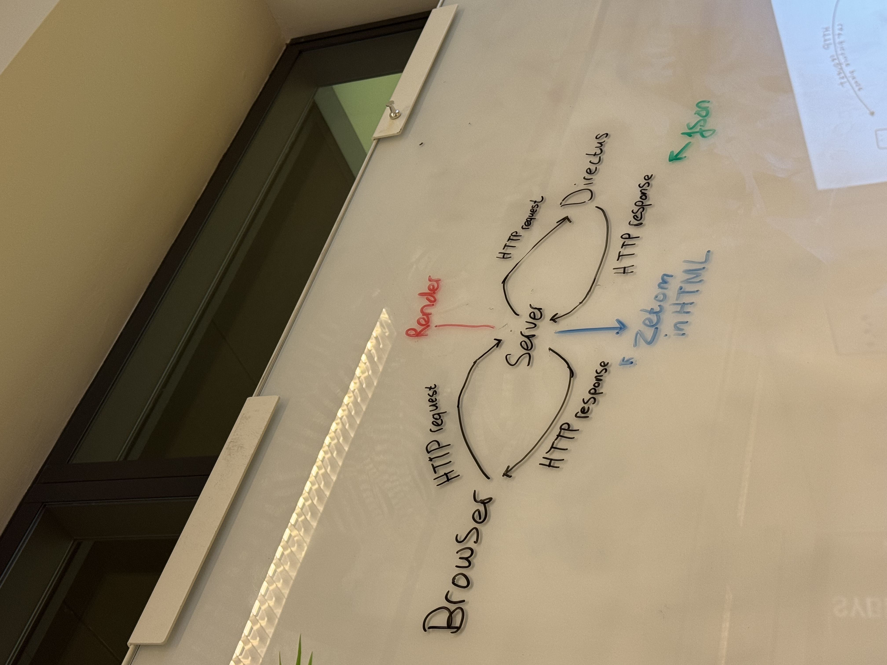

gestructureerde manier van het opmaken van pagina's
elementen van HTML in elkaar zetten heet 'nesten'
CSS
vorm, layout, typografie, animatie
met selectors zoals p, * en a kan je kleuren selecteren
color = property, waarde = rood samen vormt dit een declaratie
JS
wordt gebruikt voor bewegingen op een website
wanneer de gebruiker ergens overheen gaat met zijn muis ontstaan er
bewegingen
3 studievragen
wat is het nut van een breakdown schets?
hoe kan je het beste onthouden welke letters en tekens waarvoor bedoeld
zijn?
waar ben ik nou eigenlijk mee bezig, als ik iets intik en het is goed
denk ik fijn maar ik weet niet wat ik doe
sprint-1 week 1 dag 3
uitgezocht waaruit de HvA website is opgebouwd
sprint-1 week 1 dag 4
JS: querySelector, addEventListener,
sprint-1 week 2 dag 3
Schrijf drie dingen op die je vandaag hebt geleerd
ik heb zelf grids toegepast in de squad page.
Ik heb geleerd hoe ik @media kan gebruiken om pagina's automatisch aan
te laten passen aan de grootte van het scherm.
Ik weet nu hoe ik goed een breakdown schets kan maken die voor iedereen
te begrijpen is.
sprint-1 week 2 dag 5
welke feedback heb je gegeven aan de squad page van een ander team?
Ik heb tips gegeven over de keuze van tekst en toevoeging van tekst bij
paragrafen
welke feedback heb je ontvangen en waar wil je aan het weekend iets aan
doen
de site ziet er overzichtelijk uit en is responsive, na het weekend moeten
er links naar de profielkaarten komen.
Sprint-1 week 3 dag 1
op welke manieren kan je visuele hiërachrie aanbrengen in je ontwerp? lege
ze kort uit
je kan visuele hiëarchie toevoegen aan je ontwerp door de grootte,
kleur/contrast witruimte en positie en animatie te gebruiken
Welke niveaus van visuele hiërarchie heb je geleerd?
1: het meest belangrijke waar de gebruiker naar moet kijken, de main info
2: belangrijke details die van belang zijn op de hoofdzaak
3: Overige algemene informatie die belangrijk kunnen zijn maar de
gebruiker niet direct nodig heeft
Wie is Joshua Porter en wat bedoelt hij met; 'visual hierarchy'?
Joshua Porter is de creator van 'what to wear'en een designer, met de
quote visual hierarchy bedoeld hij de manier waarop belangrijke informatie
door de gebruiker eerder gezien wordt dan bijzaken of achtergrond info met
behulp van kleuren, tekstgroottes, contrast etc.
sprint-1 week 3 dag 3
wat heb ik geleerd vandaag?
vandaag hebben we updates gemaakt aan onze squad page, ik heb geleerd dat
het gebruik van media queries echt specifiek onderdelen van je code per
stuk aan moet roepen, echter vind ik het erg lastig te bepalen waar dit
moet staan en wat ik dan moet invullen.
sprint - 2
Sprint-2 week 1 dag 1
vandaag geleerd hoe je met een opdrachtgever moet communiceren en de
juiste vragen moet stellen aan de hand van een briefing en debriefing.
Sprint-2 week 1 dag 3
welke 3 dingen heb je geleerd over
schaduwen tekenen om te laten zien dat je op een knop hovert
eerst de tekst op schrijven en dan pas een knop eromheen tekenen
duidelijk de hierarchie in typografie zien om duidelijk aan te tonen wat
belangrijk is.
Sprint-2 week 1 dag 5
vandaag heb ik van de css van een andere groep kennis opgedaan ik heb
geleerd hoe je met HTML echt alleen de basis legt en nog geen gebruik
maakt van CSS
sprint-2 week 2 dag 1
wat is het verschil tussen flexbox layout en grid layout? wanneer zou je
welke gebruiken
flexbox is één dimensionaal en werkt dus in maar een richting, rij of
kolom. grids zijn twee dimensionaal. flex zou je gebruiken voor het netjes
uitlijnen of onder elkaar zetten van items. grids kan je gebruiken voor
complexere layouts met vaste structuren
sprint-2 week 2 dag 3
drie eigenschappen van leesbare tekst zijn
headings en tussenruimte
regels niet langer dan 10-12 woorden
tekst is minimaal 16px groot
door mobile first te gaan werken moet je altijd met een klein scherm als
voorbeeld beginnen en dan vanaf daar naar groter werken en zorgen dat het
mooi blijft. je gebruikt bij media queries hierom ook altijd min-width.
Sprint-2 week 3 dag 1
3 code conventies
tabs
spaties
ademruimte/witregels
hieronder de link waarin je kan zien dat ik deze 3 dingen heb toegepast op
me code
https://github.com/JulianDavelaar/the-client-website/blob/d2df4742c273b59e3ea20c4b11283f3fb8f7aa58/index.html#L9C1-L38C14
je kan de leesbaarheid van de code verbeteren door duidelijke namen te
gebruiken en goede sections weer te geven. en met refactoren pas je de
code conventies toe op je eigen code.
sprint-2 week 3 dag 3
Wat vond je van de feedback die je hebt ontvangen van de mentor? Welke
feedback ga je verwerken voor de sprint review?
afbeeldingen van de opdrachtgever invoegen en afrondingen maken voor de
buttons.
wat is jouw belangrijkste vraag voor de opdrachtgever die je wil stellen
tijdens de sprint review?
kan je zonder inloggen de foto's van andere gebruikers zien of blijft dat
prive?
Sprint - 3 week 1 dag 1
Voor wie is toegankelijkheid belangrijk?
voor mensen met beperkingen, niet alleen altijd maar ook tijdelijk of
situationeel
Voor woensdag ga ik de webpagina die ik heb gekozen nog handmatig
controleren en dit in me wiki schrijven
Beschrijf drie voorbeelden voor moeilijke WCAG richtlijnen
remove horizontal scroll
use fieldset and legend elements where appropiate
Associate input error messaging with the input it corresponds to
Sprint - 3 week 3 dag 1
een voorbeeld van een kleurcombinatie met een goed contrast is
bijvoorbeeld wit op een rode achtergrond. een kleurcombinatie die minder
goed werkt is oranje op rood omdat dit 2 warme kleuren zijn. ik denk dat
ik me aan WCAG level AA ga houden, zodat ik wel de meeste mensen kan
helpen die problemen hebben bij het bedienen van websites. en ik denk dat
het afhangt van de soort website die ik bouw in hoeverre ik me bezig hou
met de accessibility.
Sprint - 3 week 3 dag 3
wat ik anders ga aanpakken komende sprint review is alvast mijn vragen
opschrijven en meer werk leveren zodat ik meer kan reviewen
2 verbeteringen in de readme die ik heb gemaakt, zijn het duidelijker
opschrijven van hoe de website werkt, en logischere zinsopbouw.
ik wil feedback van de opdrachtgever op hoe we nu aan het werk zijn als
groep. Of het oke is als me eigen draai die ik eraan ga geven het
volledige design veranderd & welke gegevens bij het profiel van de
gebruiker moet staan en of de profielen ook vindbaar zijn voor andere
gebruikers.
Sprint - 4 week 1 dag 1
Ik heb geleerd dat de huisstijl erg belangrijk is voor een website en je
hiermee goed je merk herkenbaar kan maken. ik heb geleerd dat keuzes met
je groepje maken over de kleuren etc ook best lang kan duren ook heb ik
geleerd dat een website veel meer kleuren heeft dan in eerste instantie
lijkt.
vandaag heb ik geleerd dat het maken van custom properties veel
makkelijker is en dat je hiermee alle kleuren op je site kan aanpassen
door er maar eentje aan te passen. Ook heb ik geleerd dat kleuren elkaar
kunnen overschrijven wanneer je de juiste volgorde gebruikt. En dat je een
stylesheet die je samen maakt kan inladen in je eigen code en voor jezelf
kan gebruiken.
interresante voorbeelden uit de slides:
https://css-tricks.com/specifics-on-css-specificity/ bij de checkout van
week 1 dag 1 staan nog links naar codepen van FDND - Typografie - Oefening
2 - uitwerking
Sprint - 4 week 1 dag 5
Feedback die wij hebben gegeven aan andere teams ging voornamelijk over de
lees en overzichtelijkheid van de pagina, we hebben ze ook tips gegeven.
Wat de andere teams goed deden was de pagina opmaken met lettertype en
achtergrond, dit kunnen wij ook nog wel toevoegen. Ik ga aan de issues in
het weekend werken en begin volgende week, het liefst heb ik ze voor einde
van het weekend af.
Sprint - 4 week 2 dag 1
Dit is mijn tekst met een ander font.
Sprint - 4 week 2 dag 2
Sprint - 4 week 2 dag 5
maak je genoeg gebruik van de gezamenlijke stylesheet?
ja, in mijn design heb ik alle kleuren die ik gebruik aangesloten op de
styleguide.
benoem 2 voorbeelden hoe je gebruik maakt van de cascade
gaat over de werking van van de similarity principes en wat je wel en
niet kan gebruiken
2 dingen die je nog wilt leren
hoe je dit specifiek kan toepassen op websites waar dit erg lastig is
welke vormen je het beste kan gebruiken om je website mooi te houden
Retrosprint
🍗 Ik weet hoe ik met GitHub iteratief kan werken, gebruik issues en
sub-issues, en ik kan uitleggen wat een fork, clone, commit, push, pull,
merge en conflict inhouden. issues
😅Ik weet van HTML wat elementen, tags en attributen zijn, en hoe ik
mijn HTML kan valideren, en van CSS wat selectors, properties, values,
units en combinators zijn. link naar learnprogramming samenvatting
🤓Ik weet hoe ik Figma kan gebruiken om te variëren, hoe ik interactieve
prototypes kan maken, en ik kan inschatten op welk moment ik verder ga
in code. Figma ontwerpen
😅Ik weet alle Layout Modes in CSS en eigenschappen van elke te
benoemen, kan van (onderdelen van) een ontwerp bepalen welke ik inzet,
en ze toepassen en combineren.
hiermee geexperimenteerd in verschillende projecten maar lastig, ook
op codepen dingen mee gedaan
🤓Ik weet wat de WCAG richtlijnen zijn, hoe ik een WCAG audit met
automatische en handmatige tests doe, en hoe ik testresultaten kan
verwerken. repository van WCAG test
🤓Ik weet hoe ik met alleen HTML een prototype van (een deel van) een
ontwerp maak, en waarom een robuust fundament belangrijk is, voordat ik
volgende lagen toevoeg. HTML schets
🤓Ik weet hoe ik Mobile First ontwerp en ontwikkel, hoe ik dat kan
herkennen in mijn CSS, hoe CSS nesting hierbij kan helpen, en wat het
voordeel is van deze manier. issue met nest en schets
😅Ik weet verschillende regels voor leesbaarheid van tekst, hoe ik de
typografie kan aanpassen met CSS, en welke properties en units ik
wanneer in kan zetten.
styleguide
Ik weet hoe het werkt maar niet helemaal hoe ik het zelf moet
gebruiken en wanneer ik de typografie moet aanduiden
🍗Ik weet hoe kleurcontrast te maken heeft met visuele hiërarchie én met
toegankelijkheid, en hoe ik dit kan testen en verbeteren. Issue met color contrast
😅Ik weet hoe ik een duidelijke Readme en Wiki kan opleveren, hoe ik
Markdown hierin toe kan passen, hoe ik mijn werk aan een opdrachtgever
presenteer tijdens een Sprint Review en hoe ik inhoudelijke feedback kan
krijgen. Feedback opdrachtgever
Ik kan geen readme van mezelf vinden, ik heb er wel een paar gedaan
maar ik weet niet wat een markdown is.
🤓Ik weet wat in CSS specificity, cascade en inheritance betekenen, en
kan deze onderwerpen via een schets uitleggen aan iemand anders.
met CSS cascade en inheritance kan je kleuren van bijvoorbeeld
meerdere dezelfde knoppen, een kleur laten 'overerfen'.
hierdoor kan je dus met 1 kleur alle andere kleuren bepalen en ook
makkelijk aanpassen.
🤓Ik weet verschillende Gestalt wetten te benoemen en kan ze inzetten om
ontwerpen beter (of slechter) te maken. Issue gestalt
😅Ik weet hoe ik in HTML formulieren en formulierelementen maak, hoe ik
validatieregels in HTML attributen meegeef, hoe ik verschillende states
kan stylen met CSS en wat het verschil is tussen een placeholder en een
label. Forms
😅Ik weet wat Custom Properties in CSS zijn, waarom ze zo heten, hoe je
ze gebruikt en dynamisch inze t, en hoe ze samenwerken met specificity,
cascade en inheritance.
Custom properties zijn eigenlijk waardes in CSS die je zelf maakt,
deze kan je later weer aanroepen.
dit is heel fijn om je code mee up to date te houden, als je namelijk
een kleur wilt veranderen verander je gelijk alles tegelijk.
😅Ik weet de basis van programmeren, zoals variabelen, functies, loops
en data types, en ik weet wat het verschil is tussen een imperatieve
taal en een declaratieve taal.
check mijn learnprogramming.online en ook learnhtmlcss.online.
🤓Ik weet wat keyframe animaties in CSS zijn, hoe je ze kunt gebruiken,
hoe ze verschillen van transitions, en wanneer je wat inzet.

🤓Ik weet het verschil tussen feedback en feedforward in een User
Interface, hoe die samenwerken, en hoe duidelijke labels de User
Interface beter kunnen maken. Deeltaak UI events
🍗Ik weet wat een gebruikerstest is, hoe je deze voorbereidt, en hoe je
met een user story, testplan, scenario en observeren tot bruikbare
testresultaten komt. user story etc.
🤓Ik weet hoe ik in JavaScript via het Document Object Model met
querySelector, addEventListener en classList micro-interacties toe kan
voegen aan mijn website. Voorbeeld grid selector snappthis
🤓Ik weet wat UI events en event properties zijn, hoe ik verschillende
UI events in JavaScript kan gebruiken, en wat een callback functie is.
UI Events deeltaak
Samenvatting totaalscore
Ik heb in totaal 37 punten, dingen die ik al goed ken gaan voornamelijk over design en regels over visualiteit zoals gestalt, kleurcontrast en figma, technische code is voor mij lastiger. hier zou ik wat meer aandacht aan kunnen besteden
sprint 5 week 1 dag 1
Ik wil javascript leren en begrijpen zodat ik er beter in wordt
Hoe ga ik JS toepassen op de snappthis pagina
zoveel mogelijk tijd in de JS fundamentals stoppen en er veel mee bezig
zijn
Ik ken nog geen javascript begrippen, ik ga aan de JS fundamentals
werken EN learnprogramming.online van Jad
sprint 5 week 1 dag 3
wat moet ik nog doen om van comments naar code te gaan met JS
ik moet het stappen plan afmaken en per JS onderdeel de code gaan
invoeren, hiervoor moet ik nog een nieuwe page voor snappthis maken
ik heb van learnprogrammmingonline al een hoop lessen gedaan en ben nu bij
les 13
ik ga aan de learnjavascript.online werken vanaf vandaag
Sprint 5 week 2 dag 3
wat ik nog niet wist over html is dat je op een best simpele manier een
form required kan maken.
volg deze knop om te kijken naar een demo'tje
knop
voor vrijdag wil ik de interactie toevoegen bij de form waar je de datum
moet kiezen dat de datum invullen verplicht is.
brave is en blijft mijn favoriete browser, dit omdat deze gewoon op
google basis is en ad en trackingblokkers heeft.
elke browser heeft zijn eigen interface, ik denk dat het heel fijn is
dat je je eigen keuze kan maken in waar je voorkeur ligt en dat elke
browser tot dezelfde functies bestaat.
Sprint 5 week 2 dag 5
Hoe ging het testen met een testpersoon? is het gelukt om diegene hardop
te laten voorlezen,
de persoon niet te beinvloeden en geen vragen tussendoor te beantwoorden/
ging heel goed, gebruiker wist waar hij naartoe moest navigeren en hoefde
hem daar niet bij te helpen.
wat ging goed, en wat kan er beter/
de test ging goed, er was alleen wat te weinig om te laten zien dus voor
volgende keer ook even zorgen dat de layout modes werken
hoe ging de tweede user test? zijn daar nog verbeterpunten uitgekomen die
je volgende week gaat oppakken?
ja, check de issues van fix the flow
sprint-5 week 3 dag 1
3 studievragen over navigeren en tabel
wat is de beste manier om je pagina overzichtelijk te houden aan de hand
van navigatie
wanneer gebruik je tabellen en wanneer juist niet
hoe kan je feedforward/feedback met combineren met nivigatie.
2026
goede voornemens dit jaar
meer tijd in school stoppen
meer discipline in alles wat ik doe
hoe kunnen we elkaar gaan helpen en beter worden
vragen stellen aan elkaar
meer samenwerken en elkaar helpen wanneer je vastloopt
Sprint-6 week 1 dag 5
Projectboard is bijgewerkt, blijf dit doen.
tijdens het reviewen gezien dat anderen grotere stylesheets hebben met
name bij de fonts
dit moet ik zelf ook nog even doen.
de CSS tip uit de video die ik ga toepassen is de vw, dit is een handige
en makkelijke manier om mijn site meer responsive te maken
sprint-6 week 2 dag 3
Beschrijf 3 nieuwe CSS properties die je nog niet kende. schrijf een
paar zinnen over deze properties naar voorbeelden
inset, om daarmee alle kanten van een item ruimte te kunnen geven
transition cubic, hiermee kan je ingewikkelde richtingen waardes geven
en de css vertellen hoe hij moet bewegen
slow in/out, hetzelfde als ease in/out maar dan langzamer
beschrijf 2 Disney animatie principes die je nog niet helemaal begrijpt.
Welke vragen heb je daarover?
Staging, wat bepaald of een stage op de juiste plek staat of niet?
Exaggeration and appeal, wanneer zou je dit gebruiken? hoe belangrijk
moet iets zijn voor dit.
Beschrijf 1 animatie principe dat je toe gaat voegen aan je persoonlijke
website tijdens de assessment week
Ik ga de squash & stretch toevoegen want dit lijkt mij het beste voor de
knoppen en voor de weinige opties die ik heb om animaties toe te voegen
vragenlijst 2
🍗 Ik weet hoe ik met GitHub iteratief kan werken, gebruik issues en
sub-issues, en ik kan uitleggen wat een fork, clone, commit, push, pull,
merge en conflict inhouden. issues S6
🍗Ik weet van HTML wat elementen, tags en attributen zijn, en hoe ik
mijn HTML kan valideren, en van CSS wat selectors, properties, values,
units en combinators zijn. link naar learnprogramming samenvatting
🤓Ik weet hoe ik Figma kan gebruiken om te variëren, hoe ik interactieve
prototypes kan maken, en ik kan inschatten op welk moment ik verder ga
in code. issue met prototype
🤓Ik weet alle Layout Modes in CSS en eigenschappen van elke te
benoemen, kan van (onderdelen van) een ontwerp bepalen welke ik inzet,
en ze toepassen en combineren.
in Sprint 6 veel mee bezig geweest, gaat beter dan eerst. link naar CSS S6
🍗Ik weet wat de WCAG richtlijnen zijn, hoe ik een WCAG audit met
automatische en handmatige tests doe, en hoe ik testresultaten kan
verwerken. issue met opgeloste wcag audit
🍗Ik weet hoe ik met alleen HTML een prototype van (een deel van) een
ontwerp maak, en waarom een robuust fundament belangrijk is, voordat ik
volgende lagen toevoeg. HTML prototype
🤓Ik weet hoe ik Mobile First ontwerp en ontwikkel, hoe ik dat kan
herkennen in mijn CSS, hoe CSS nesting hierbij kan helpen, en wat het
voordeel is van deze manier. issue met nest en schets
🤓Ik weet verschillende regels voor leesbaarheid van tekst, hoe ik de
typografie kan aanpassen met CSS, en welke properties en units ik
wanneer in kan zetten. CSS met typografie
🍗Ik weet hoe kleurcontrast te maken heeft met visuele hiërarchie én met
toegankelijkheid, en hoe ik dit kan testen en verbeteren. Issue met color contrast fix
😅Ik weet hoe ik een duidelijke Readme en Wiki kan opleveren, hoe ik
Markdown hierin toe kan passen, hoe ik mijn werk aan een opdrachtgever
presenteer tijdens een Sprint Review en hoe ik inhoudelijke feedback kan
krijgen. readmeWiki
🤓Ik weet wat in CSS specificity, cascade en inheritance betekenen, en
kan deze onderwerpen via een schets uitleggen aan iemand anders.
met CSS cascade en inheritance kan je kleuren van bijvoorbeeld
meerdere dezelfde knoppen, een kleur laten 'overerfen'.
hierdoor kan je dus met 1 kleur alle andere kleuren bepalen en ook
makkelijk aanpassen.
🍗Ik weet verschillende Gestalt wetten te benoemen en kan ze inzetten om
ontwerpen beter (of slechter) te maken.
Issue gestalt
🤓Ik weet hoe ik in HTML formulieren en formulierelementen maak, hoe ik
validatieregels in HTML attributen meegeef, hoe ik verschillende states
kan stylen met CSS en wat het verschil is tussen een placeholder en een
label. Forms
🤓Ik weet wat Custom Properties in CSS zijn, waarom ze zo heten, hoe je
ze gebruikt en dynamisch inzet, en hoe ze samenwerken met specificity,
cascade en inheritance.
Custom properties zijn eigenlijk waardes in CSS die je zelf maakt,
deze kan je later weer aanroepen.
dit is heel fijn om je code mee up to date te houden, als je namelijk
een kleur wilt veranderen verander je gelijk alles tegelijk.
😅Ik weet de basis van programmeren, zoals variabelen, functies, loops
en data types, en ik weet wat het verschil is tussen een imperatieve
taal en een declaratieve taal.
🤓Ik weet wat keyframe animaties in CSS zijn, hoe je ze kunt gebruiken,
hoe ze verschillen van transitions, en wanneer je wat inzet. UI Events deeltaak
🤓Ik weet het verschil tussen feedback en feedforward in een User
Interface, hoe die samenwerken, en hoe duidelijke labels de User
Interface beter kunnen maken. Deeltaak UI events
🍗Ik weet wat een gebruikerstest is, hoe je deze voorbereidt, en hoe je
met een user story, testplan, scenario en observeren tot bruikbare
testresultaten komt. user story S6
🍗Ik weet hoe ik in JavaScript via het Document Object Model met
querySelector, addEventListener en classList micro-interacties toe kan
voegen aan mijn website. Voorbeeld grid selector snappthis
🤓Ik weet wat UI events en event properties zijn, hoe ik verschillende
UI events in JavaScript kan gebruiken, en wat een callback functie is.
UI Events deeltaak
Samenvatting totaalscore
Ik heb in totaal 46 punten, dit zijn er 9 meer vergeleken met de vorige keer dat ik de vragenlijst heb gemaakt, Ik ben beter geworden in de code en het testen ervan, ook regels zoals gestalt ben ik beter in geworden terwijl ik dacht dat ik hier al best goed in was.
Reflectie vragenlijst 1 en 2
Als ik de vragenlijsten vergelijk zie ik wel een stijgende lijn. bij lijst 1 had ik 37 punten en merkte ik dat ik vooral goed was in design, zoals Gestaltprincipes, kleurcontrast en werken in figma. de technische kant en dan vooral de layouts en programmeren vond ik toen lastig.
Bij de tweede lijst haalde ik 46 punten. ik ben vooral beter geworden in mijn codevaardigheden. layout modes toepassen gaat beter, ik werk mobile first en begrijp toegankelijkheid(WCAG en kleurcontrast) beter. ook ben ik beter geworden in JavaScript en het toevoegen van interacties.
Ik ben het meest verbeterd op het technische gebied, ik merk meer balans tussen design en code waardoor het werken een stuk vloeiender gaat.
Semester 2
Sprint 7 week 1 maandag
hoe link je bestanden vanuit je public map?
Door met een / te beginnen en dan de path in te voeren die gaat naar wat
je wilt.
Zonder iets voor de / wordt er automatisch in public gezocht
Wanneer moet je je server herstarten?
Als je er langer dan een kwartier niet op bent geweest
Wat moet je doen om je server te herstarten?
Render en je site tabblad opnieuw laden
Heb je syntax highlighting voor liquid code aan staan?
Nu wel
Hoe open je de terminal met je keyboard?
ctrl + `
Wat staat er in de node_modules map?
Codes gebouwt door honderden developers die wij gratis mogen gebruiken
Hoe zou je Liquid beschrijven?
Ik zou liquid beschrijven als een tool net zoals HTML, CSS en JS. alleen
met liquid kan je code in shopify maken en aanpassen.
Wat kun je met liquid filters doen?
Met liquid filters kan je filters gooien over je teksten zoals uppercase
en data juist weergeven
Kun je Liquid code in de browser zien als je de HTML broncode bekijkt?
Nee
Waar wordt Liquid code uitgevoerd?
Liquid code wordt server-side uitgevoerd niet in de browser
Waar wordt HTML uitgevoerd?
HTML wordt wel in de browser uitgevoerd
Wat is een route?
Een route is een pad naar een ander pagina, te zien aan wat er na de /
staat in de zoekbalk
Wat hebben routes met bestandsnamen te maken?
De bestandsnaam is de locatie waar de route naartoe gaat, dit staat
achter de / in de zoekbalk
Kun je in je browser zien welke bestandsnamen je voor views hebt
gebruikt? Kon dat vorig semester wel?
nee
Wat doet JSON.parse()?
JSON.parse zet een string om in bruikbare JSON data.
Sprint 7 week 1 vrijdag
code en design review
van server side code heb ik geleerd dat je data uit een database kan halen
en kan gebruiken in je code. ook kan je strings omzetten in bruikbare code
met JSON.parse
h1 {
.bio,
.profile-picture,
.tech-logo { transition: transform 0.5s ease;
}
Dit vind ik een handig stukje code, bij het inladen van de pagina krijg je
een kleine animatie.
Sprint 7 week 2 maandag
directus en HTTP
De browser stuurt een HTTP(Hypertext Transfer Protocol) naar de server(render) waarin hij vraagt om data.
Render stuurt weer een HTTP request naar de database directus, directus stuurt deze data in json formaat terug.
Render zet de json dan weer om in leesbare HTML en stuurt dit weer door naar de browser.
Hieronder een wat leesbaardere foto.

de uitleg van julia evans is uitgebreider maar komt op hetzelfde neer
Voorbeeld van een GET en POST request uit server.js
app.get("/student/:id", async function (request, response) {
// Gebruik de request parameter id en haal de juiste persoon uit de WHOIS API op
const personDetailResponse = await fetch(
"https://fdnd.directus.app/items/person/" + request.params.id,
);
// En haal daarvan de JSON op
const personDetailResponseJSON = await personDetailResponse.json();
// Render student.liquid uit de views map en geef de opgehaalde data mee als variable, genaamd person
// Geef ook de eerder opgehaalde squad data mee aan de view
response.render("student.liquid", {
person: personDetailResponseJSON.data,
squads: squadResponseJSON.data,
});
});
Een GET request is eigenlijk wat de naam al zegt, je zegt eigenlijk tegen de server,
"hé server, geef me die pagina". De server stuurt terug wat jij wilt en er veranderd verder niks.
app.post("/", async function (request, response) {
response.redirect(303, "/");
});
Je stuurt informatie naar de server om iets te veranderen of op te slaan zoals een
formulier invullen, een bericht posten of data toevoegen.
Vragenlijst 3
Ik kan uitleggen wat NodeJS, Express en Liquid zijn, hoe die samenwerken, en hoe ik daarmee lokaal een server kan maken.
Profile card
😅 In mijn profile card heb ik gebruik gemaakt van de database, NodeJS is een soort JavaScript waarmee je JavaScript buiten de browser
als server kunt draaien. Met express maak je routes en webservers. Liquid is een template engine waarmee je dynamische HTML kunt
genereren met data van de server. NodeJS runt de server, Express regelt de routes en liquid maakt leesbare HTML met data.
Een lokale server maak je vanuit je terminal met ctrl + `, en typt dan npm install en vervolgens npm start.
😅In de package.json staat projectinfo, scripts en welke npm packages je gebruikt
Ik kan met command's in de terminal een NodeJS project starten en stoppen, en kan uitleggen wanneer herstarten nodig is.
🤓In de terminal start je een project door 'npm start' in te vullen, deze kan je weer stoppen door ctrl+c in te vullen.
Dit doe je alleen als het nodig is, het is nodig wanneer er data in de database is veranderd.
Ik heb een strategie voor debuggen in NodeJS, en weet hoe ik console.log() in kan zetten en uit kan lezen op de server.
Eerlijk gezegd gebruik ik console.log nooit omdat ik niet echt begrijp wat ik moet invullen tussen de haakjes
Ik weet wat URLs zijn, en kan de verschillende onderdelen van een URL benoemen en gebruiken
stukje js met wat routes
🤓een URL bestaat uit een Protocol: HTTPS, een domein: voorbeeld.com, een pad of route: /route. en je kan filteren en sorteren met ?sort=birthdate
🤓een Route is een pad op je server bijv /squad en een route parameter komt daarachter te staan bijv /squad/id
Ik weet wat de request en response argumenten zijn binnen een route callback functie in Express, en welke ik waarvoor kan gebruiken
req res code
Request = data die binnenkomt(URL query body), response = data die je teruggeeft(HTML JSON)
Ik weet wat een query parameter is, hoe ik die kan gebruiken in server-side code, en hoe ik die via links en formulieren kan veranderen
query param voor zoekfunctie
Een query parameter is de tekst die na de URL achter de / staat.
Ik snap wat HTTP is, kan het verschil tussen GET en POST methods uitleggen, en snap dat mijn NodeJS code zowel server als client is
POSTGET
HTTP staat voor HyperText Transfer Protocol en zorgt ervoor dat je veilig over het web kan surfen. GET haalt data op en POST verstuurt data.
Ik weet wat een REST API is, wat valide JSON data is en kan JSON data fetchen van verschillende API endpoints
Profile card met gefetchte JSON Data
REST API is een web service die data geeft via URL's, valide JSON data ziet er zo uit:
{"phone": "06-47351504",
"home": "Voorhout",
"age": "22",
"job": "Front End Designer"}
Ik kan data uit een REST API filteren, sorteren of doorzoeken door query parameters aan te passen
voorbeeld in me schrift
Filteren en sorteren doe je door te zoeken met bijv. ?sort
Ik kan uitleggen wat Liquid doet, wat een view is, wat server-side rendering inhoudt en hoe ik data aan een view meegeef om dynamische HTML te renderen.
Liquid
liquid maakt van dynamische JSON data leesbare HTML. De view is wat het leesbaar maakt en server-side rendering maakt de HTML voordat het naar de browser gaat.
Ik weet hoe ik in Liquid partials kan maken en gebruiken, en data mee kan geven aan partials.
Partials squadpage
Partials kan ik liquid heel handig zijn, zo kan je bijvoorbeeld je head en footer in een apart partial bestand zetten en verbinden met je index door iets wat lijkt op {% render 'partials/head.liquid', title: 'Squad page' %} in te vullen. Zo heb je bovenaan alleen deze regel en de werkzame partial wordt hiermee aangeroepen.
Ik weet hoe ik verschillende Liquid filters toe kan passen en waar ik kan vinden hoe ze werken.
Liquid filters
Je hebt filters zoals date wat ik heb gebruikt in me voorbeeld, je kan hiermee data bewerken of specifieke dingen tonen. de soorten filters kan je gewoon online vinden
Ik heb een strategie voor het debuggen van dynamische data in Liquid views met het json filter.
Voor het debuggen kan je {{ data | json }} gebruiken, heb dit nog niet zoveel gebruikt.
Ik weet wat control flow in Liquid is, en hoe ik if en for loops kan gebruiken in een Liquid view
squad page met loop
Met control flow kan je bepalen welke data je toont, hiermee kan je ervoor zorgen dat het data gewicht minimaal blijft, loops gebruik je zodat je maar 1 regel hoeft te schrijven voor het tonen van meerdere data objecten
Sprint 8 week 1 woendag
Leg de termen voor de JavaScript Object Notation in eigen woorden uit
Een object is een item en heeft eigenschappen zoals een eend, geel, kwakt, drijft.
Een array is een lijst die open en sluit je met de blokhaken []
Een key is het eerste stukje in een Object (zie voorbeeld)
Een value is het stukje wat na de key komt en tussen "" staat
Een string is een woord dat tussen "" staat
Een number is gewoon een nummer en staat niet tussen haakjes of iets anders.
Een boolean is altijd true of false
Null is een "" waar niks is ingevuld niet te verwarren met undefined wat letterlijk niks is
: " " {} , [] dit is alles wat je nodig hebt voor JSON
[ (Dit zorgt voor de array)
{
Key : "value",
eigenaar : "Julian",
}
]
Sprint 9 week 1 maandag
Hoe lang heb ik gedaan over lo-fi idee schets van POST interactie
de lo-fi schets maken duurde ongeveer een uurtje
Hoe lang heb ik gedaan over wireflow met breakdown van de interactie
de wireflow en breakdown is nog niet af maar duurde ook niet meer dan een uurtje
Hoe lang heb ik gedaan over het bouwen van de functionaliteit in HTML met server-side rendering van de interactie
hier moet ik nog mee beginnen
Sprint 9 week 2 maandag
welke enhancement strategiën zijn er en welke heb je al toegepast?
Switch control, carrousel, uitklappen van koppen. die laatste ben ik nu mee bezig
welke UI component ga je woensdag bespreken?
FAQ woensdag en switch volgende week
3 onderdelen uit me project waarover ik twijfel met canuse.
ik twijfel niet, alle css moet werken
Sprint 9 week 3 maandag
welke user preference media features ga jij nog toepassen in jouw project?
welke UI component van de deeltaak woensdag bespreken?
de eerstvolgende na de FAQ component.
2 Ik kan uitleggen wat NodeJS, Express en Liquid zijn, hoe die samenwerken, en hoe ik daarmee lokaal een server kan maken
2 Ik weet wat het doel van package.json is, heb met npm packages geïnstalleerd en weet hoe ik die gebruik in mijn server code
3 Ik kan met commando's in de terminal een NodeJS project starten en stoppen, en kan uitleggen wanneer herstarten nodig is
1 Ik heb een strategie voor debuggen in NodeJS, en weet hoe ik console.log() in kan zetten en uit kan lezen op de server
2 Ik weet wat URLs zijn, en kan de verschillende onderdelen van een URL benoemen en gebruiken
3 Ik weet wat in Express routes en route parameters zijn, en ik kan zelf een nieuwe route aanmaken volgens mijn eigen URL ontwerp
2 Ik weet wat de request en response argumenten zijn binnen een route callback functie in Express, en welke ik waarvoor kan gebruiken
1 Ik weet wat een query parameter is, hoe ik die kan gebruiken in server-side code, en hoe ik die via links en formulieren kan veranderen
3 Ik snap wat HTTP is, kan het verschil tussen GET en POST methods uitleggen, en snap dat mijn NodeJS code zowel server als client is
2 Ik weet wat een REST API is, wat valide JSON data is en kan JSON data fetchen van verschillende API endpoints
2 Ik kan data uit een REST API filteren, sorteren of doorzoeken door query parameters aan te passen
3 Ik kan uitleggen wat Liquid doet, wat een view is, wat server-side rendering inhoudt en hoe ik data aan een view meegeef om dynamische HTML te renderen
3 Ik weet hoe ik in Liquid partials kan maken en gebruiken, en data mee kan geven aan partials
Ik weet hoe ik verschillende Liquid filters toe kan passen en waar ik kan vinden hoe ze werken
Ik heb een strategie voor het debuggen van dynamische data in Liquid views met het json filter
Ik weet wat control flow in Liquid is, en hoe ik if en for loops kan gebruiken in een Liquid view
Ik weet wat variabelen, objects, functions, keywords, arrays, strings, statements en expressions zijn in JavaScript
Ik snap wat de async en await keywords doen in JavaScript code, en wat die te maken hebben met promises
Ik begrijp het verschil tussen client-side JS en server-side JS en kan uitleggen waarom JS in browsers onbetrouwbaarder is dan NodeJS
Ik kan gebruikers via een formulier data met een POST naar mijn server laten sturen, dit bewaren in een variabele en gebruiken in views
Ik kan naar de server gePOSTe formulier data bewaren in een REST API en weet die weer terug te vinden via een filter
Ik weet hoe ik Content First en mock data in kan zetten om snel een HTML prototype te maken met server-side code
Ik weet hoe ik verschillende UI states uit de UI stack kan verwerken in mijn views, en hoe ik daarin feedforward en feedback mix
Ik weet dat ik niet weet hoeveel verschillende devices, operating systems, browsers, versies en varianten daarvan er in gebruik zijn en wat dat betekent voor testen
Ik weet wat Progressive Enhancement betekent, en ken minimaal vijf strategieën om dat toe te passen in mijn HTML, CSS en JS, waaronder feature detection minder weergeven